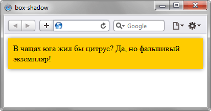

Синтаксис
box-shadow: none | <тень> [, <тень>]* где <тень>: inset <сдвиг по x> <сдвиг по y> <радиус размытия> <растяжение> <цвет>
none
Отменяет добавление тени.
inset
Тень выводится внутри элемента. Необязательный параметр.
сдвиг по x
Смещение тени по горизонтали относительно элемента.
Положительное значение этого параметра задает сдвиг тени вправо,
отрицательное — влево. Обязательный параметр.
сдвиг по y
Смещение тени по вертикали относительно элемента.
Положительное значение задает сдвиг тени вниз,
отрицательное — вверх. Обязательный параметр.
размытие
Задает радиус размытия тени. Чем больше это значение,
тем сильнее тень сглаживается, становится шире и светлее.
Если этот параметр не задан, по умолчанию устанавливается
равным 0, тень при этом будет четкой, а не размытой.
растяжение
Положительное значение растягивает тень,
отрицательное, наоборот, ее сжимает.
Если этот параметр не задан, по умолчанию устанавливается 0,
при этом тень будет того же размера, что и элемент.
цвет
Цвет тени в любом доступном CSS формате,
по умолчанию тень черная.
Необязательный параметр.
Пример:
<!DOCTYPE html>
<html>
<head>
<meta charset="utf-8">
<title>box-shadow</title>
<style>
.shadow {
background: #fc0; /* Цвет фона */
box-shadow: 0 0 10px rgba(0,0,0,0.5); /* Параметры тени */
padding: 10px;
}
</style>
</head>
<body>
<div class="shadow">
В чащах юга жил бы цитрус?
Да, но фальшивый экземпляр!
</div>
</body>
</html>
